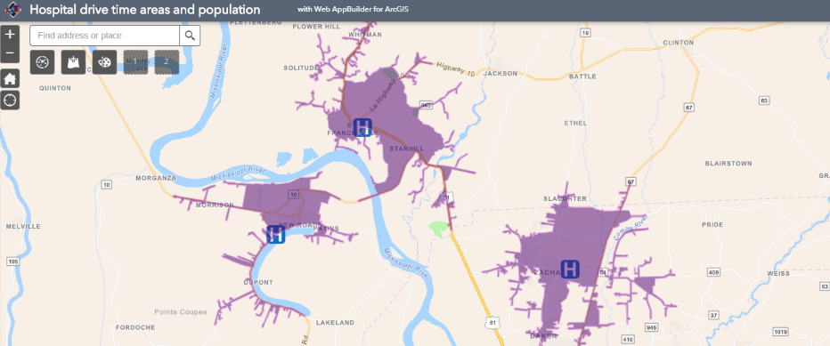
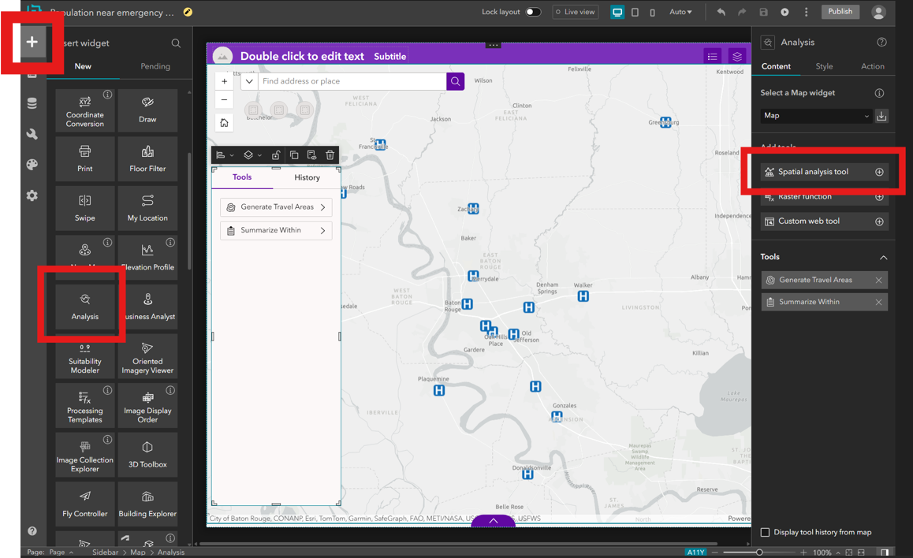
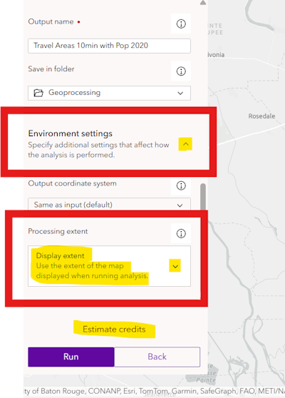
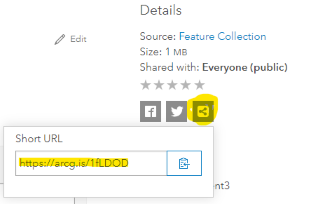

Assignment 5
Geoprocessing emergency rooms, walking to Taco Bell
Use ArcGIS Online to perform spatial analysis. Map the population of Baton Rouge, then create an app to analyze how many people live within 5 minutes of a hospital. The app will allow you to add different layers to analyze: how many people live within a 5-minute walk of a Taco Bell, 15-minute drive of a library, etc.
Table of Contents
Finished Example

Screenshot of an app that uses the Analysis Widget, which requires users to sign into ArcGIS Online.
Data
This assignment uses feature layers already hosted in ArcGIS Online. Your app will use the population layer below, but in the Try It section you will run an analysis on a layer you find. Keep in mind that for layers to work with the analysis tools in this exercise:
- Only use point layers of the type “Feature Layer (hosted)”; no tile layers.
- Avoid layers with too many features (hundreds), which could consume too many credits to analyze.
Population layer
Title: USA Census Block Points
Geometry type: Points
Summary: Centroids of census blocks including 2020 population. This layer provides population data as points so the layer can be used in the “Summarize Within” tool to count population within a polygon.
Item Details:: https://arcg.is/erSWG
Service URL: https://services.arcgis.com/P3ePLMYs2RVChkJx/arcgis/rest/services/USA_Census_Block_Points/FeatureServer
Example layer: Hospitals
Title: Baton Rouge MSA Emergency Rooms 2020
Geometry type: Points
Summary: Hospitals offering emergency services in the Baton Rouge Metropolitan Statistical Area as of March 2020.
Service URL: https://services2.arcgis.com/njxlOVQKvDzk10uN/arcgis/rest/services/Baton%20Rouge%20MSA%20Emergency%20Rooms%202020/FeatureServer
Steps
Part 1: Create a map
- Go to the ArcGIS Online Map Viewer to create and save a new map called “Travel Area Calculator”.
- In the map viewer, click
Add>Add Layer from URL, paste the service URL for the Population layer. - Click the newly added
USA Census Block Pointsin the layer list, and then on the right side of the map viewer click the Filter icon to filter the points forLA. - Hide the population layer. It doesn’t need to be visible to use its population data in our analysis.
- Change the basemap if desired.
- Save the map and share it with
Everyone. - Click
Create and app>Experience Builder.
Part 2: Create an app
- You should now see Experience Builder. Choose the “Foldable” template, or experiment with others as long as they allow you to add the analysis widget.

- Your map should appear in Experience Builder. If not, you can add it manually.
- Add widgets to your app by clicking
+in the top left, then search forAdd DataandAnalysiswidgets, dragging each one to the map area. - Once a widget is added to the map, its window size and position can be adjusted. Clicking the widget will show its options in the right side pane.
- Add data - default options
- Analysis - under
Add tools, clickSpatial analysis tool, search for and click (configure both to allow export and allow adding to the map)Generate Travel AreasandSummarize Within(see Perform Analysis for details on available tools).
- Save your app and continue to customize the app however you see fit, saving often and previewing as needed.
- Publish the app when ready and share with
Everyone (Public).
Part 3: Run analysis
- Launch your app, click the
Add Datawidget, go to theURLtab, and paste the service URL of the Baton Rouge MSA Emergency Rooms layer. Click theActionsicon (four circles) and add it to the map. - Now open the
Analysiswidget. Click theGenerate Travel Areastool. In the configuration, set:- Input layer: hospitals (emergency rooms) layer
- Cutoffs: 5 (minutes)
- Travel direction:
Toward - Areas from different points:
Split - Output name: will appear in your Content.
- Environment settings:
Processing extent>Display extent(make sure the map is zoomed in as tightly as possible on the hospital points but also be sure every hospital is visible)
- Click
Estimate creditsto make sure the credit usage is reasonable (less than 10 credits for this example).The next step will consume your ArcGIS Online account's credits. Use the `Estimate credits` link each time you run the tool to ensure you will not use all of your allocated credits. Check your balance in your account settings on ArcGIS Online.
- Click
Run. - When the task completes, close the analysis tool and view the results on the map. You will see asymmetric polygons around each hospital location, representing the area for which a drive to the hospital would take 5 minutes or less.
- Now we need to count the population within those travel area polygons. Click the
Analysiswidget again and this time choose theSummarize Withintool with the following settings:- Features to summarize: USA Census Block Points
- Summary polygon layer: your generated travel areas
- Field statistics:
+Fieldand select the 2020 population field - Output name: will appear in your Content.
- Environment settings:
Processing extent>Display extent(make sure the map is zoomed in as tightly as possible on the hospital points but also be sure every hospital is visible)
- Check the credit usage, run the analysis, and once the task completes, close the
Analysiswidget. - On the map, click one of the polygons in the new Hospital Service Area Population polygons (you can hide the old polygon layer using the Layer List widget). In the popup, there should be a new field added for the 2020 population sum.
Try it
- Reload your app to clear the hospitals and service areas.
- Use the
Add Datawidget to add a new layer in your app. This could be your points of interest from Assignment 3, a layer you find in ArcGIS Online, or any other sources. For example, you could search forTaco Belland add the layer in the results from EsriMedia.
- Calculate the service area population for the new layer, e.g., how many people live within a 5-minute drive of a Taco Bell.
- Find the service area polygons layer with population you just created in Step 3 in your Content and go to its Item Details page. Fill out the fields:
a. Title
b. Summary
c. Description (<200 words):- Explain what the layer is, how it was created.
- Give example population count for one of the locations in the layer you chose, e.g., “Our Lady of the Lake Livingston has a 5-minute drive service area population of 9,717.”
- Link to your app.
d. Terms, such as “None” or “CC BY-SA”.
e. Credit the source of any data used to generate your layer
- For the link you will submit, copy the link to your travel area layer’s Item Details page using the social icons on the right side of the page:

Get the link to your Item Details page by clicking the Link icon.
Checklist
- Item Details page with basic info for the feature layer of the service areas you generated using your own layer (not hospitals) with your app.
- Description of the layer and how it was generated.
- Example population for one of your locations, given in the Description.
- Paste a link to your app in the Description.
Submit
- The URL to the Item Details page of your feature layer. Example:
https://www.arcgis.com/home/item.html?id=ABC123orhttps://arcg.is/ABC123
↑ Top
← Back to Assignments